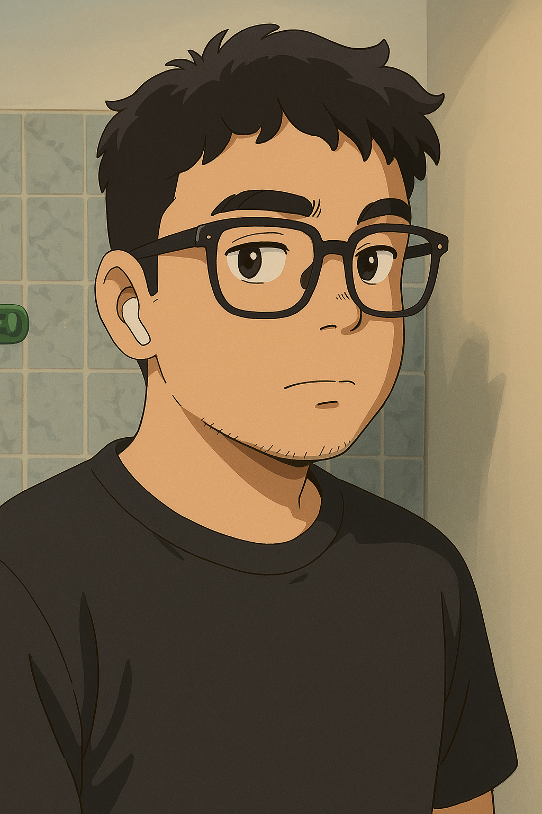

Biografía
Hola, mi nombre es Valentín Castrillo. Soy de Argentina, más específicamente de Viedma, Río Negro. Desde chico siempre tuve curiosidad por la tecnología y por entender cómo funcionan las cosas.
Con el tiempo esa curiosidad se convirtió en una pasión. Me gusta aprender constantemente sobre computación, software y nuevas herramientas tecnológicas.
Actualmente sigo desarrollando mis habilidades en el mundo de la tecnología, combinando conocimientos de hardware, software y programación, con el objetivo de seguir creciendo profesionalmente.
Intereses
- Tecnología y programación
- Videojuegos y cultura digital
- Ciclismo y actividad física
- Fútbol recreativo con amigos
- Música: guitarra y piano